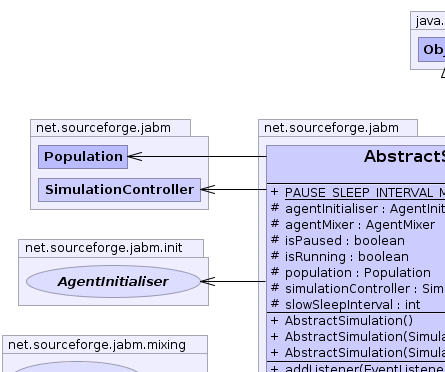
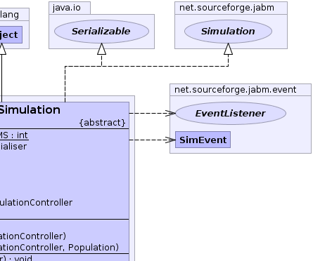
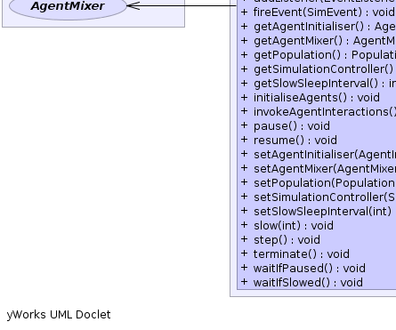

net.sourceforge.jabm.AbstractSimulation
net.sourceforge.jabm.AbstractSimulation
|
|||||||||
| PREV CLASS NEXT CLASS | FRAMES NO FRAMES | ||||||||
| SUMMARY: NESTED | FIELD | CONSTR | METHOD | DETAIL: FIELD | CONSTR | METHOD | ||||||||
java.lang.Object
public abstract class AbstractSimulation
|  |  |
|  |  |
| Field Summary | |
|---|---|
protected AgentInitialiser |
agentInitialiser
|
protected AgentMixer |
agentMixer
|
protected boolean |
isPaused
|
protected boolean |
isRunning
|
static int |
PAUSE_SLEEP_INTERVAL_MS
|
protected Population |
population
|
protected SimulationController |
simulationController
|
protected int |
slowSleepInterval
Interval in milliseconds to wait in between steps if the simulation is to be slowed down. |
| Constructor Summary | |
|---|---|
AbstractSimulation()
|
|
AbstractSimulation(SimulationController simulationController)
|
|
AbstractSimulation(SimulationController simulationController,
Population population)
|
|
| Method Summary | |
|---|---|
void |
addListener(EventListener listener)
|
void |
fireEvent(SimEvent event)
|
AgentInitialiser |
getAgentInitialiser()
|
AgentMixer |
getAgentMixer()
|
Population |
getPopulation()
Fetch the Population of agents for this simulation. |
SimulationController |
getSimulationController()
Fetch the simulation controller for this simulation. |
int |
getSlowSleepInterval()
|
void |
initialiseAgents()
|
void |
invokeAgentInteractions()
Schedule events of type AgentArrivalEvent for each agent in the simulation according to the AgentMixer in use by the SimulationController. |
void |
pause()
Pause the simulation. |
void |
resume()
Resume the simulation after pausing. |
void |
setAgentInitialiser(AgentInitialiser agentInitialiser)
|
void |
setAgentMixer(AgentMixer agentMixer)
Configure the mixing policy which specifies how agents interact each other. |
void |
setPopulation(Population population)
|
void |
setSimulationController(SimulationController simulationController)
|
void |
setSlowSleepInterval(int slowSleepInterval)
|
void |
slow(int slowSleepInterval)
Slow down the simulation. |
void |
step()
|
void |
terminate()
Terminate the simulation. |
void |
waitIfPaused()
|
void |
waitIfSlowed()
|
| Methods inherited from class java.lang.Object |
|---|
clone, equals, finalize, getClass, hashCode, notify, notifyAll, toString, wait, wait, wait |
| Methods inherited from interface net.sourceforge.jabm.Simulation |
|---|
getSimulationTime |
| Methods inherited from interface java.lang.Runnable |
|---|
run |
| Field Detail |
|---|
protected SimulationController simulationController
protected AgentInitialiser agentInitialiser
protected AgentMixer agentMixer
protected Population population
protected boolean isRunning
protected boolean isPaused
protected int slowSleepInterval
public static final int PAUSE_SLEEP_INTERVAL_MS
| Constructor Detail |
|---|
public AbstractSimulation(SimulationController simulationController)
public AbstractSimulation(SimulationController simulationController,
Population population)
public AbstractSimulation()
| Method Detail |
|---|
public SimulationController getSimulationController()
Simulation
getSimulationController in interface Simulationpublic void setSimulationController(SimulationController simulationController)
public void fireEvent(SimEvent event)
public void addListener(EventListener listener)
public void initialiseAgents()
public void invokeAgentInteractions()
public AgentInitialiser getAgentInitialiser()
public void setAgentInitialiser(AgentInitialiser agentInitialiser)
public Population getPopulation()
Simulation
getPopulation in interface Simulationpublic void setPopulation(Population population)
public AgentMixer getAgentMixer()
public void setAgentMixer(AgentMixer agentMixer)
agentMixer - AgentMixerpublic void pause()
Simulation
pause in interface Simulationpublic void resume()
Simulation
resume in interface Simulationpublic void terminate()
Simulation
terminate in interface Simulationpublic void waitIfPaused()
public void waitIfSlowed()
public void step()
public int getSlowSleepInterval()
public void setSlowSleepInterval(int slowSleepInterval)
public void slow(int slowSleepInterval)
Simulation
slow in interface SimulationslowSleepInterval - The number of ms to sleep between ticks.
|
|||||||||
| PREV CLASS NEXT CLASS | FRAMES NO FRAMES | ||||||||
| SUMMARY: NESTED | FIELD | CONSTR | METHOD | DETAIL: FIELD | CONSTR | METHOD | ||||||||